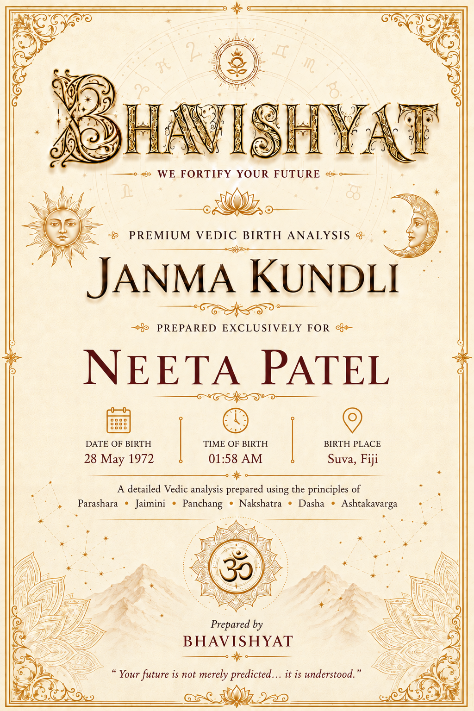
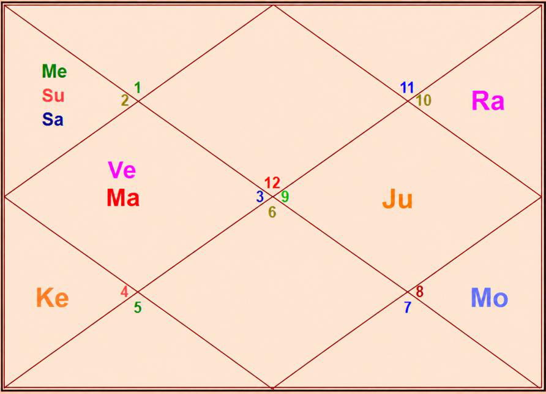

Janma Kundli • Ms. Neeta Patel
Birth Details & Panchang
| Name | Ms. Neeta Patel | Paksha | Shukla |
| Date of Birth | 28 May 1972 | Tithi | Purnima |
| Time of Birth | 01:58 AM | Nakshatra | Anuradha |
| Birth Place | Suva, Fiji | Vaar | Saturday |
| Longitude | 178°25' E | Yoga | Shiva |
| Latitude | 18°08' S | Karan | Vishti |
| Ascendant | Pisces | Asc Lord | Jupiter |
| Tithi Lord | Saturn | Tithi Deity | Chandra |
| Nakshatra Lord | Saturn | Nakshatra Deity | Mitra |
| Yoga Deity | Surya | Karan Deity | Kala |
| Yogi | Mercury | Duplicate Yogi | Jupiter |
| Abhiyogi | Mars | Dagdha Rashi | Not applicable |
Natal Chart (Rashi)

| Planet Distribution | Evenly Distributed — Left (Invisible Half); beginning of life more eventful | ||
| Ascendant | Pisces (Meena) | Moon / Sun Sign | Scorpio (Vrishchika) / Taurus (Vrishabha) |
| Malefic | Sun, Venus, Saturn | Shunya Nakshatra | Punarvasu, U. Ashadha, Pushya |
| Maraka | Mercury, Mars | Dasha Balance | 14Y 10M 12D |
| Badhaka | Mercury (Budh) | Mangalik | Yes (diluted) |
| Birth Dasha | Sa-Me-Mo (1-2-6) | ||
Janma Kundli • Ms. Neeta Patel
Favourable Influences
| Benefic Years | 18, 20, 25, 27, 29, 34, 36, 38 | ||
| Favourable Days | Monday, Tuesday, Thursday | ||
| Favourable Planets | Moon, Mars, Jupiter | ||
| Favourable Signs | Pisces (12), Virgo (6) | ||
| Favourable Ratna | Yellow Sapphire, Pearl | Favourable UpRatna | Yellow Topaz, Moonstone |
| Lucky Ratna | Coral | Favourable Deity | Jagdamba |
| Favourable Metal | Bronze | Favourable Colour | Yellow |
| Direction | North-East | Favourable Cereals | Gram |
| Favourable Items | Turmeric, Yellow Fruit (Sweet), Book | ||
| Favourable Plant | Arjun Tree | Favourable Temple | Somnath Temple |
Planets in Rashi Chart
| Planet | Lordship | Sign | Nakshatra | Nak. Lord | Nak. Count | Nav Tara | Char Karak |
|---|---|---|---|---|---|---|---|
| Sun | 6L | Taurus (2) | Rohini | Moon | 15 N | 5 | Matrikarak (4H) |
| Moon | 5L | Scorpio (8) | Anuradha | Saturn | 1 N | 6 | Gnatikarak (6H) |
| Mars | 2L, 9L | Gemini (3) | Ardra | Rahu | 17 N | 7 | Atmakarak (Life) |
| Mercury | 4L, 7L | Taurus (2) | Krittika | Sun | 14 N | 2 | DaraKarak (7H) |
| Jupiter | 10L, 1L | Sagittarius (9) | Mula | Ketu | 3 N | 9 | Bhratrikaraka (3H) |
| Venus | 3L, 8L | Gemini (3) | Ardra | Rahu | 17 N | 4 | Putrakarak (5H) |
| Saturn | 11L, 12L | Taurus (2) | Rohini | Moon | 15 N | 1 | Amatyakarak |
| Rahu | — | Capricorn (10) | Uttara Ashadha | Sun | 5 N | 8 | — |
| Ketu | — | Cancer (4) | Pushya | Saturn | 19 N | 3 | — |
| Debilitated Planet(s) | Moon | Combust Planet(s) | Mercury, Saturn |
| Retrograde Planet(s) | Jupiter, Venus | ||
Sarvastakvarga & Houses
| Very Strong (35+) | 1H | ||
| Strong (31-35) | 7H, 11H | ||
| Above Average (28-30) | 2H, 5H, 8H, 10H | ||
| Below Average (24-27) | 3H, 6H, 12H | ||
| Weak (21-23) | 4H, 9H | ||
| Very Weak (<21) | — | ||
Janma Kundli • Ms. Neeta Patel
Houses in Rashi Chart
| House | Sign | Planets | SAV | Lords | Aspect |
|---|---|---|---|---|---|
| 1H | Pisces (12) | — | 38 | — | Ketu |
| 2H | Aries (1) | — | 30 | — | Jupiter |
| 3H | Taurus (2) | Sun, Mercury, Saturn | 25 | 6L; 4L, 7L; 11L, 12L | Rahu |
| 4H | Gemini (3) | Mars, Venus | 21 | 2L, 9L; 3L, 8L | — |
| 5H | Cancer (4) | Ketu | 28 | — | Saturn |
| 6H | Leo (5) | — | 26 | — | Jupiter |
| 7H | Virgo (6) | — | 32 | — | Mars, Rahu |
| 8H | Libra (7) | — | 28 | — | — |
| 9H | Scorpio (8) | Moon | 22 | 5L | Ketu |
| 10H | Sagittarius (9) | Jupiter | 28 | 10L, 1L | — |
| 11H | Capricorn (10) | Rahu | 33 | — | Mars |
| 12H | Aquarius (11) | — | 26 | — | Saturn |
Bhinnashtak Varga (BAV)
| Sign | Sa | Ju | Ma | Su | Ve | Me | Mo | Ra |
|---|---|---|---|---|---|---|---|---|
| 12 | 5 | 7 | 5 | 4 | 6 | 5 | 6 | 3 |
| 1 | 5 | 4 | 3 | 4 | 5 | 6 | 3 | 3 |
| 2 | 5 | 3 | 4 | 5 | 2 | 3 | 3 | 6 |
| 3 | 2 | 5 | 1 | 4 | 3 | 5 | 1 | 4 |
| 4 | 1 | 7 | 3 | 2 | 6 | 4 | 5 | 6 |
| 5 | 3 | 3 | 2 | 5 | 4 | 4 | 5 | 3 |
| 6 | 2 | 6 | 5 | 3 | 6 | 5 | 5 | 2 |
| 7 | 4 | 4 | 3 | 2 | 5 | 5 | 5 | 1 |
| 8 | 4 | 3 | 3 | 3 | 3 | 2 | 4 | 6 |
| 9 | 3 | 5 | 3 | 5 | 3 | 4 | 5 | 4 |
| 10 | 3 | 5 | 5 | 6 | 5 | 6 | 3 | 1 |
| 11 | 2 | 4 | 2 | 5 | 4 | 5 | 4 | 4 |
Janma Kundli • Ms. Neeta Patel
Vimshottari Dasha
Maha Dasha
| Dasha Lord | From | To |
|---|---|---|
| Saturn | 11-Apr-1968 | 11-Apr-1987 |
| Mercury | 11-Apr-1987 | 10-Apr-2004 |
| Ketu | 10-Apr-2004 | 10-Apr-2011 |
| Venus | 10-Apr-2011 | 10-Apr-2031 |
| Sun | 10-Apr-2031 | 10-Apr-2037 |
| Moon | 10-Apr-2037 | 10-Apr-2047 |
| Mars | 10-Apr-2047 | 10-Apr-2054 |
| Rahu | 10-Apr-2054 | 09-Apr-2072 |
| Jupiter | 09-Apr-2072 | 09-Apr-2088 |
Antar Dasha (Venus Maha Dasha)
| AD Lord | From | To |
|---|---|---|
| Venus | 10-Apr-2011 | 10-Aug-2014 |
| Sun | 10-Aug-2014 | 10-Aug-2015 |
| Moon | 10-Aug-2015 | 10-Apr-2017 |
| Mars | 10-Apr-2017 | 10-Jun-2018 |
| Rahu | 10-Jun-2018 | 10-Jun-2021 |
| Jupiter | 10-Jun-2021 | 09-Feb-2024 |
| Saturn | 09-Feb-2024 | 10-Apr-2027 |
| Mercury | 10-Apr-2027 | 08-Feb-2030 |
| Ketu | 08-Feb-2030 | 10-Apr-2031 |
Pratyantar Dasha (Saturn Antar Dasha)
| P. Dasha | From | To |
|---|---|---|
| Saturn | 09-Feb-2024 | 10-Aug-2024 |
| Mercury | 10-Aug-2024 | 21-Jan-2025 |
| Ketu | 21-Jan-2025 | 29-Mar-2025 |
| Venus | 29-Mar-2025 | 08-Oct-2025 |
| Sun | 08-Oct-2025 | 05-Dec-2025 |
| Moon | 05-Dec-2025 | 11-Mar-2026 |
| Mars | 11-Mar-2026 | 17-May-2026 |
| Rahu | 17-May-2026 | 07-Nov-2026 |
| Jupiter | 07-Nov-2026 | 10-Apr-2027 |
Janma Kundli • Ms. Neeta Patel
Nav Tara Sequence
| Planet | Chara Karak | House | Lordship | Strength | Nakshatra | Lord | Placement |
|---|---|---|---|---|---|---|---|
| Saturn | Amatyakarak | 3H | 11L, 12L | Below Avg (24-27) | Rohini | Moon | 9H |
| Mercury | DaraKarak (7H) | 3H | 4L, 7L | Below Avg (24-27) | Krittika | Sun | 3H |
| Ketu | — | 5H | — | Above Avg (28-30) | Pushya | Saturn | 3H |
| Venus | Putrakarak (5H) | 4H | 3L, 8L | Weak (21-23) | Ardra | Rahu | 11H |
| Sun | Matrikarak (4H) | 3H | 6L | Below Avg (24-27) | Rohini | Moon | 9H |
| Moon | Gnatikarak (6H) | 9H | 5L | Weak (21-23) | Anuradha | Saturn | 3H |
| Mars | Atmakarak (Life) | 4H | 2L, 9L | Weak (21-23) | Ardra | Rahu | 11H |
| Rahu | — | 11H | — | Strong (31-35) | Uttara Ashadha | Sun | 3H |
| Jupiter | Bhratrikaraka (3H) | 10H | 10L, 1L | Above Avg (28-30) | Mula | Ketu | 5H |
Birth Chart Nav Tara Chakra
| Saturn (Janam) | 1 | Moon | 10 | 19 | Ketu | |
| Mercury (Sampat) | 2 | 11 | 20 | |||
| Ketu (Vipat) | 3 | Jupiter | 12 | 21 | ||
| Venus (Kshem) | 4 | 13 | 22 | |||
| Sun (Pratyari) | 5 | Rahu | 14 | Mercury | 23 | |
| Moon (Sadhak) | 6 | 15 | Sun, Saturn | 24 | ||
| Mars (Nidhan) | 7 | 16 | 25 | |||
| Rahu (Mitra) | 8 | 17 | Mars, Venus | 26 | ||
| Jupiter (Ati Mitra) | 9 | 18 | 27 |
Important Saturn Transits
| 1st Sade Sati | 06 Oct 1982 – 15 Nov 1990 | ||
| 2nd Sade Sati | 15 Nov 2011 – 24 Jan 2020 | ||
| 3rd Sade Sati | 29 Jan 2041 – 04 Dec 2049 | ||
| Kantak Shani | 31 May 2032 – 13 Jul 2034 | ||
Janma Kundli • Ms. Neeta Patel
Other Important Transits
| Type | Planet | House | SAV | From | To |
|---|---|---|---|---|---|
| Good | Saturn | 1H, 2H | 38, 30 | 29 Mar 2025 | 17 Apr 2030 |
| Rahu | 1H | 38 | 30 Oct 2023 | 18 May 2025 | |
| Jupiter | 4H, 5H | 21, 28 | 14 May 2025 | 24 Jul 2028 | |
| Jupiter | 7H | 32 | 26 Nov 2027 | 28 Feb 2028 | |
| Jupiter | 7H | 32 | 24 Jul 2028 | 26 Dec 2028 | |
| Jupiter | 7H | 32 | 29 Mar 2029 | 25 Aug 2029 | |
| Challenging | Saturn | 5H | 28 | 06 Sep 2004 | 16 Jul 2007 |
| Saturn | 8H | 28 | 15 Nov 2011 | 02 Nov 2014 | |
| Saturn | 11H | 33 | 12 Jul 2022 | 17 Jan 2023 | |
| Rahu | 11H | 33 | 05 Dec 2026 | 23 Jun 2028 | |
| Rahu | 9H, 2H | 22, 28 | 11 Jan 2030 | 31 Jul 2031 |
Lal Kitab Birth Chart
| HN | Rashi | Planets | Varshphal Yr 55 27 May 2026 – 26 May 2027 |
Varshphal Yr 56 27 May 2027 – 26 May 2028 |
|---|---|---|---|---|
| 1 | Pisces (12) | — | — | — |
| 2 | Aries (1) | — | Rahu | — |
| 3 | Taurus (2) | Sun, Mercury, Saturn | Ketu | — |
| 4 | Gemini (3) | Mars, Venus | Jupiter | — |
| 5 | Cancer (4) | Ketu | — | Sun, Mercury, Saturn |
| 6 | Leo (5) | — | Moon | Jupiter |
| 7 | Virgo (6) | — | — | — |
| 8 | Libra (7) | — | Mars, Venus | Moon |
| 9 | Scorpio (8) | Moon | — | Ketu |
| 10 | Sagittarius (9) | Jupiter | — | — |
| 11 | Capricorn (10) | Rahu | Sun, Mercury, Saturn | Mars, Venus |
| 12 | Aquarius (11) | — | — | Rahu |
Janma Kundli • Ms. Neeta Patel
Part B — Panchang Insights
| Tithi — Purnima | Shukla Paksha Purnima (15th Tithi) indicates sophistication, maturity and a nurturing nature. It supports roles involving guidance or instruction, work with a cultural or traditional theme, and the successful completion of undertakings. However, it can also indicate over-attachment to people or things, which needs caution. |
| Moon | The natal Moon is Paksha Bali, around 95% luminous, which mitigates any negative influence on physical and mental well-being. Planetary aspects add seriousness and caution to the nature. |
| Vaar — Saturday | Makes the native disciplined, resilient, serious and responsible. Supportive for real estate, properties, agriculture and service-based roles, but gives delay in gains. |
| Nakshatra — Anuradha | Smart, opportunistic, with frequent change of residence and a preference for living away from the birthplace. Emotionally vulnerable yet quick-witted; a follower of parents and a long-term planner. Task-master, practical, and gains respect in family and social circles. Usually starts earning young, with a marked rise in career after marriage. |
| Yoga — Shiva | Favours specialisation in a subject-matter, skilled hands and healing energy. |
| Karan — Vishti | Supportive of service-based roles. Gives deep understanding of the technical work behind any system, resilience, persistence and conflict-resolution ability. However, it often triggers obstacles and disruption in work. Peacock and peacock feathers are lucky (such as keeping peacock feathers at home). |
Janma Kundli • Ms. Neeta Patel
Rashi Chart Overview
| Planet Distribution | As per planetary distribution in the Rashi chart, the beginning part of life would be more eventful than the latter part. No planet in a Dusthana is a blessing for the native. |
| Kal Sarp | There is no Kal Sarpa Dosh in the chart. |
Nature, Personality & Appearance — Ascendant Pisces
| Core Nature | Emotional, dreamy, imaginative, intuitive, spiritual, creative and artistic — good for career. |
| Physical Features | Fair complexion, attractive face and big eyes. |
| Lifestyle | Loves oceans, music, meditation, spiritual places and art; dislikes harsh reality and conflicts. Drawn to healing, charity and spirituality. |
| More About Ascendant | Upright, honest and humane. Changeable temperament and influenced by others' opinions. Extremely sympathetic, forgiving, generous, honest and reliable. Often follows two occupations and succeeds in new fields. Successful in businesses dealing with liquids, spirits and export-import. Likelihood of strong influence of spouse. |
| Weakness | Escapist, overly trusting, and emotionally overwhelmed. |
Moon Sign — Scorpio
| Emotional Nature | Secretive and difficult to understand; competitive with a strong ability to win. Mysterious, transformative, determined and intuitive. Sometimes jealous, controlling, obsessive or revengeful. Loves mysteries, research and deep-water places; dislikes betrayal and superficiality. Strong willpower with inexhaustible energy. Prefers thorough understanding, has good executive ability and confidence, and works best independently. |
Janma Kundli • Ms. Neeta Patel
Impact of Planetary Placements
- Courageous — takes big and bold decisions in life and succeeds, proving those decisions right. People do not support much — self-made. Normally does not follow the family or father's profession. Fight with siblings or neighbours (ego clash); prone to theft during daytime.
- Good yoga for spiritual travels and wealth yoga; lucky for father. Good yoga for teacher, researcher, philosopher and astrologer; strictly follows own religion. Break in education; education after 24 years will earn money.
- Gives aggression in nature. Two marriages in the family. Good for own business. Fire or electricity related frequent problems or incidents. Dominating personality. Blood-related or BP disease possible. Usually more age gap (3–4+ years) between the native and younger sibling — either money-minded or health troubles; much attached with the house.
- Changes plans and thoughts; challenging for daughter.
- Good for teacher, trainer, instructor, guide, advisor and consultant. Rental income and commission-based earning.
- Good for luxuries, wealth, a good house and vehicle; receives many gifts.
- Seeks much hard work. Good for business-related or work-related travel. Fights with siblings or neighbours. Loans; prolonged health issues to someone in the family.
Janma Kundli • Ms. Neeta Patel
Impact of Planetary Placements (contd.)
- A lot of wealth through social connections, networking and friends. Multiple sources of income; foreign travels. Work less — gains more; may earn money through shortcuts. Be cautious of the social circle regarding cheating or dispute, especially during Rahu / Saturn Dasha. The native does not get to spend time with grandfather in childhood.
- Living away from children or differences with them. Stomach-related issues. Loss in speculation or stock market. Break in education; knowledge of multiple languages.
- Help and support from authority; family member in government job, pensioner or government-related work.
- Gives dissatisfaction in life during Moon / Mars Dasha. Mind inclined to research; travels a lot in life (road travel). Mitigates the effect of Mangalik Dosha. Gives wealth but is not very good for the mother.
- Good for higher education.
- Good at mediation and handling conflict. Partner is disciplined and aggressive. Skilled in art, music, singing, painting etc.
Planetary Combinations
- Good for teaching and training; sharp mind and strong willpower. Good wealth; prone to addiction.
- Not getting along with father or boss; child may not get along with the native. Differences and no career growth if living with father. Problem in career of children if living under the same roof. Dedicated towards parents (father) or Guru. Very workaholic, with capability to excel at any work. Very good for own work or enterprise; bad for job except government service. Boss steals credit of work done. Big event(s) in career around 33, 36 and 51 years of age. Prone to dispute or cheating in property-related matters. Difficult to make the first house.
- Mango tree near the native's home — God's blessing. May give very negative thoughts in relevant Dasha or transit. Fond of SUVs; supportive and courageous partner. Bad relations with maternal relatives. Yoga for multiple properties and vehicles, if favourable.
Janma Kundli • Ms. Neeta Patel
12 Houses of Rashi Chart
- Kind, sensitive, compassionate and a dreamer; spendthrift on self-care, luxury, clothes and pleasures. Prone to frequent health problems; much investment on self. Shares and donates a lot. Confusing thought process at times; duality — entirely different personality in different roles. High chances of foreign or distant-place settlement. Maintaining good looks and self-care enhances luck.
- Aggressive in money matters; some harshness or boldness in speech. Takes big decisions and responsibility in family and finance matters.
- Support from siblings; sibling living at a distant place or foreign country. Stable thought process; will take time to implement ideas — think and then execute. Makes money through communication or writing.
- Multiple properties and houses; multi-storey residence. Very expressive at home; restless in the house.
- Willingness to learn something new; emotional for children. Very creative and imaginative.
- Yoga for holding a powerful position at the workplace; authoritative at work. Disputes triggered by ego; enemies are also powerful.
- May feel competitiveness with partner; frequent arguments or disputes. Gives challenges in relationship or partnership.
- Sudden event related to partner; some relationship challenges. Long-term health issues, or has to live away from partner for some time in the relevant Dasha. Wealth comes through partner or inheritance.
- Transformation in life through higher learning, father or any guru. Much transformation in the life of the father. Issues in higher education. Avoid sharing travel plans.
Sarvashtakvarga — Yearly Outlook
| Challenging Years | 15, 34 | ||
| Good Months of the Year | December – February, March – April | ||
| Auspicious Months (ceremony, puja etc.) | March – April, July – August, September – October | ||
| Challenging Months of the Year | February – March, June – July, November – December | ||
| Lucky People for Native | Pisces (12), Virgo (6) | ||
| Unfavourable People for Native | Taurus (2), Gemini (3), Capricorn (10) | ||
| Aptitude | Good analytical skills; ability to win competitions; yoga for high success in profession and social status; multiple properties; workaholic nature; gradual rise in life. Strong Lagna reduces the overall negative impact of the chart (Surya Grahan, debilitated Moon, Mangalik Dosha etc.) | ||
| Favourable Direction for Opening a Bank Account | North of birth place / residence | ||
| Challenging Dasha | Venus – Saturn – Rahu (17 May – 07 Nov 2026) | ||
| Saturn Antar Dasha Note | Feb 2024 – Apr 2027 — time of loss as well as gain; initially difficult but gives good results and the starting of something new in life | ||
Janma Kundli • Ms. Neeta Patel
12 Houses of Rashi Chart (contd.)
- Luck favours in career. Aligned for consultant, teacher, advisor, spiritual guide, banker etc. Lucky for the organisation with which she works.
- Puts, or has to put, lots of effort in maintaining friendship and social circle. Lots of effort in profession to achieve gains. Differences or problems with elder sibling.
- Gains through spirituality, foreign land or connection. Cheating in investment; may face losses due to secret enemies.
- Good yoga for career and profession; prioritizes work and is a workaholic. Gives power, status, fame and a leadership position. Control at the workplace; ability of specialisation in profession.
- Gains through property, house and rental income; gains of wealth through partner.
- Mother is strong and dominant-natured. Neighbourhood impacts peace of mind. Frequent changes of residence; sometimes property-related issues.
- Yoga for multiple properties.
- Dispute with siblings or neighbourhood; bad for health of sibling.
- Problem related to property or vehicle in the relevant Dasha; affects peace of mind and domestic peace.
Janma Kundli • Ms. Neeta Patel
12 Houses of Rashi Chart (contd.)
- Good yoga for landed property and earning through real estate; domestic peace disturbed.
- Good for career, profession, social status, name and fame.
- Multiple sources of income.
- Shoulder or ear related issues likely.
Karmic Remedies — Lal Kitab
- Beware of buying stolen goods. Maintain good relations with siblings.
- Keep a silver coin and a silver square piece at home or in the wallet.
- Recite Durga Chalisa. Never keep a parrot or birds at home.
- Feeding a dog is good for earning.
- Wear a gold chain. Throw away broken glass at home, if any.
- Avoid using black hair colour.
Abbreviations
A Sacred Dedication
With Love & Blessings
for Ms. Neeta Patel's journey ahead
यतः प्रवृत्तिर्भूतानां येन सर्वमिदं ततम्।
स्वकर्मणा तमभ्यर्च्य सिद्धिं विन्दति मानवः॥ ४६॥
अपनी स्वाभाविक वृत्ति का निर्वहन करते हुए उस स्रष्टा भगवान की उपासना करो जिससे सभी जीव अस्तित्व में आते हैं और जिसके द्वारा सारा ब्रह्माण्ड प्रकट होता है। इस प्रकार से अपने कर्मों को सम्पन्न करते हुए मनुष्य सरलता से सिद्धि प्राप्त कर सकता है।
"By performing one's natural occupation, one worships the Creator from whom all living entities have come into being, and by whom the whole universe is pervaded. By such performance of work, a person easily attains perfection."
— Bhagavad Gita, Chapter 18, Verse 46
May Ms. Neeta Patel find in every act of guidance, teaching and care — the very work her Pisces ascendant and Jupiter in the 10th were born to offer — a living worship. May her natural path become her prayer, and may each season of effort leave her steadier, kinder and closer to the perfection this verse promises.